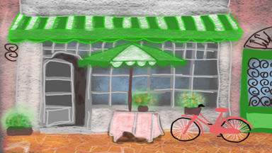
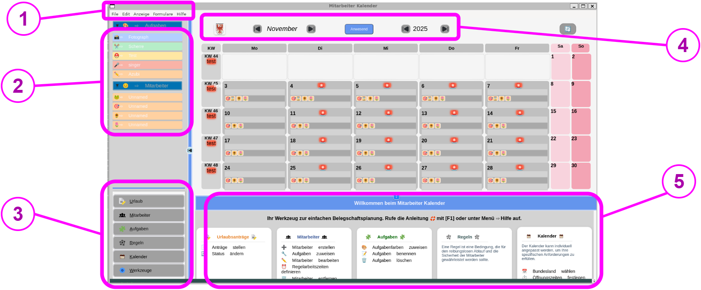

Hallo, mein geliebtes Enkeltöchterlein! Ich habe eine
grandiose Überraschung als Abschlussgeschenk zu deinem
erfolgreich abgeschlossenen Studium. Ich ziehe mich etwas aus
dem Berufsleben zurück und übergebe dir unser Restaurant …
I… i… Ich soll das „Staffing Table“ übernehmen? A… aber ich
habe doch keinerlei Erfahrung!
{{Tiana-3}}
💬 Tiana übernimmt das Restaurant

{{Tiana-3}} ist frisch von der Uni zurückgekehrt und soll das
Restaurant „The Staffing Table“ übernehmen – ein
ungwöhnliches Restauranr mit 40 Tischen, eigenem Catering und
einem chaotischen Schichtplan und verrückten Mitarbeitern,
aber vor allem grandiosem Essen.
Im Tagesmenü kann man zwischen Schichtsalat oder Schichtkäse
wählen. Der Alltags-Brei ist sehr beliebt. In der Wochenkarte
gibt es sowohl Sonntagsbraten als auch Pizza Vier
Jahreszeiten, und wenn es schnell gehen muss, die leckere
5-Minuten-Terrine. Zu besonderen Anlässen wird Weihnachtsgans,
Osterlamm oder Silvester-Raclette serviert.
Das "Staffing Table" befindet sich im Erdgeschoss eines
Altbaus im Süden Göttingens und ist bei Studierenden der
Georg-August-Uni ebenso beliebt wie bei den Arbeitern aus dem
angrenzenden Industriegebiet.
Der Betrieb wurde 27 Jahre lang von {{Jutah-3}}
leidenschaftlich, aber improvisiert geführt – mit Pinnwand,
Notizzetteln und jeder Menge Erfahrung im Kopf.
Anleitung: Was die App kann
Die Mitarbeiter-Kalender App unterstützt kleine
Teams dabei, den Einsatz verschiedener Rollen zu koordinieren und
Engpässe frühzeitig zu erkennen.
Anleitung: Was die App kann
Die Mitarbeiter-Kalender App wurde für kleine
Unternehmen mit 10–30 Mitarbeitenden entwickelt, in denen
unterschiedliche Rollen gleichzeitig besetzt sein müssen – etwa
Köch:innen und Servicekräfte in Restaurants, Ärzt:innen und
Pflegekräfte in Praxen oder Lagerarbeiter:innen und Fahrer:innen
in Logistikbetrieben.
Die App visualisiert Anwesenheiten und Abwesenheiten (Urlaub,
Krankheit, Homeoffice, Fortbildung etc.) übersichtlich in einem
Monatskalender. Gleichzeitig überprüft sie die hinterlegten
Einsatzregeln: Wenn durch Abwesenheiten eine Unter- oder
Überbesetzung droht, erscheint eine Warnung direkt im Kalender.
Die finale Entscheidung über Freigaben oder Änderungen bleibt bei
den Verantwortlichen, jedoch auf Basis fundierter Informationen.

1 = Hauptmenü mit allgemeinen Funktionen wie Zoom, Filter und
Farbschema
2 = Legende: Icons für Mitarbeitende und Farbcodes für Aufgaben
3 = Auswahl des Formularbereichs
4 = Kalender: Navigation zwischen Jahren und Monaten
5 = Bereich für Formulareingaben und Datenerfassung
Im Kern zeigt die App,
welche Mitarbeitenden an welchen Tagen und in welchen Schichten
anwesend oder abwesend
sind. So können Verantwortliche Engpässe erkennen, bevor sie
entstehen.
Mit individuell konfigurierbaren Regeln können Sie
definieren, wie ein optimal besetztes Team aussehen soll. Verstöße
gegen diese Regeln – etwa wenn an einem Mittwoch weniger als zwei
Servicekräfte geplant sind – werden direkt im Kalender als blinkende
Warnung angezeigt. Details zu jeder Abweichung erscheinen beim
Überfahren mit der Maus.
In der Erzähl-Version der Anleitung begleitet ein
fiktives Beispielunternehmen typische Szenarien im Arbeitsalltag.
Die Inhalte können je nach Bedarf
kurz & übersichtlich oder
ausführlich & erzählerisch angezeigt werden.
Hinweis: Auch wenn Abwesenheiten wie Urlaub, Dienstreisen oder
Krankheit eingetragen werden müssen, um Warnungen aktuell zu halten,
ersetzt die App keine klassische Planungstabelle. Sie dient als
Entscheidungsvorbereitungs-Werkzeug für
verantwortliche Mitarbeitende.
💬 Ein schwerer erster Tag und ein
kleiner Tipp
Nach einem chaotischen ersten Tag im
Staffing Table trifft sich {{Tiana-3}} mit ihrer alten
Freundin {{Lorelei-3}} in Loreleis gemütlichem Café. Tia wirkt
erschöpft und unsicher – die Mitarbeiter scheinen ihre
Unerfahrenheit auszutesten, und sie fragt sich, ob sie zu streng
war.
{{Tiana-1}}
„Ich weiß nicht… ich will alles richtig machen, aber ich
habe das Gefühl, ich verliere die Kontrolle. Was, wenn sie
merken, dass ich neu bin?“
{{Lorelei-1}}
„Ach, Tia, mach dir nicht so viele Sorgen! Jeder Chef hat so
einen ersten Tag. Aber ich habe einen Tipp für dich –
probier mal diese kostenlose
Mitarbeiter-Kalender-App.“
{{Lorelei-3}} zeigt Tia die App auf ihrem Tablet. Tia staunt,
wie einfach die Schichten und Urlaube eingetragen sind und wie
klar alles dargestellt wird.
{{tia-1}}
„Wow… das macht das Ganze wirklich leichter. Keine
Zettelwirtschaft mehr, keine Rätselraten, wer wann frei
hat…“
Während die beiden ein Glas Wein genießen, kommt kurz das
Thema Brend auf. Brend liebt seine Excel-Listen und
ist für neue Tools nicht gerade aufgeschlossen.
{{Lorelei-1}}
„Und pass auf, dass Brend seine Excel-Kriege nicht über euch
hereinbrechen lässt…“
{{tia-1}}
„Oh nein… das klingt nach einer Herausforderung für Tag
zwei. Aber mit der App fühle ich mich wenigstens etwas
besser vorbereitet!“